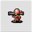

An Infantry's primary function lies in the fact that it is the cheapest unit capable of capturing properties on the map.
An Infantry's primary function lies in the fact that it is the cheapest unit capable of capturing properties on the map.
The secondary function of infantry is to block your more valuable units from being attacked. While weak defensively, infantry can usually take at least one attack from most direct combat units before being destroyed. This prevents the opponent from hitting more valuable units in the process, and also potentially leaves them open to a counterattack from your defended units.
Infantry are also effective at blocking certain tiles that you do not want your opponent to take control off, such as cities or other tiles with high defense ratings. Infantry can block air units from flying over them as well.
| Cost | 1000 |
| Movement | 3 (Foot) |
| Fuel | 99 |
| Range | 1 |
| Primary Weapon | None |
| Ammo | N/A |
| Secondary Weapon | Machine Gun |
| Vision | 2 |
| Special Commands | Capture |
| Targetable Unit | Damage Given | Damage Taken |
|---|---|---|
| Infantry | 55 | 55 |
| Mech | 45 | 65 |
| Recon | 12 | 70 |
| APC | 14 | - |
| Tank | 5 | 75 |
| Medium Tank | 1 | 105 |
| Anti-Air | 5 | 105 |
| Artillery | 15 | 90 |
| Rocket | 25 | 95 |
| Missile | 25 | - |
| Neoank | 1 | 125 |
| Megatank | 1 | 135 |
| Piperunner | 5 | 95 |
| Megatank | 1 | 135 |
| T-Copter | 30 | - |
| B-Copter | 7 | 75 |
| Bomber | - | 110 |
| Stealth | - | 90 |
| Battleship | - | 95 |
 Stronger, slower, and more expensive than Infantry, Mechanized Infantry (more commonly referred to as Mechs) are still relatively inexpensive and versatile units.
Like Infantry, Mechs are also able to Capture Properties on the map. When given a choice, it is generally preferable to have Infantry commit to capturing over Mechs, as Mechs are slower than Infantry, but much more powerful offensively.
Offensively, Mechs are comparable to Tanks in terms of power, allowing them to do moderate amounts of damage to lightly armored ground units if allowed to get the first strike. Mechs will use their Machine Guns against B-Copters, however, so it is not advisable to attack B-Copters with Mechs. Against foot soldiers, Mechs are stronger than Infantry both offensively and defensively.
While stronger than Infantry defensively, Mechs still have relatively low defense and rely on heavy terrain to survive. Combined with their much higher cost relative to Infantry, Mechs make poor blocking units. They do make strong supporting units, however, deterring opposing light units from attacking your more valuable units without suffering a retaliatory attack from a Mech.
While both Mech and Infantry are classified as foot soldiers, Mech's have a set movement range and cost that does not change under any weather or terrain condition.
| Cost | 3000 |
| Movement | 2 (Foot) |
| Fuel | 70 |
| Range | 1 |
| Primary Weapon | Bazooka |
| Ammo | 3 |
| Secondary Weapon | Machine Gun |
| Vision | 2 |
| Special Commands | Capture |
| Targetable Unit | Damage Given | Damage Taken |
|---|---|---|
| Infantry | 55 | 55 |
| Mech | 45 | 65 |
| Recon | 12 | 70 |
| APC | 14 | - |
| Tank | 5 | 75 |
| Medium Tank | 1 | 105 |
| Anti-Air | 5 | 105 |
| Artillery | 15 | 90 |
| Rocket | 25 | 95 |
| Missile | 25 | - |
| Neoank | 1 | 125 |
| Megatank | 1 | 135 |
| Piperunner | 5 | 95 |
| Megatank | 1 | 135 |
| T-Copter | 30 | - |
| B-Copter | 7 | 75 |
| Bomber | - | 110 |
| Stealth | - | 90 |
| Battleship | - | 95 |